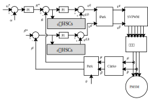

电流谐波抑制方法
创建于2021-3-29
该项目完成于2014-5，原创
该项目完成于2014-5，原创
受到死区效应等非线性因素的影响，变频器的输出电流常含有很多谐波，同时由于电机齿槽效应等本身结构的原因，使得电机的反电势等并不是理想的形状，这也会导致电机的电流不为正弦波，而含有谐波。谐波电流会引起转矩脉动，使得电机性能降低。对电流谐波进行抑制，可以提高电机的性能。
对于三相电机，相电流中会包含5次、7次、11次、13次、17次等谐波，当谐波频率较低时，电流控制器可以较好地抑制谐波电流，但当频率升高时，由于电流控制器带宽的限制，对谐波抑制的作用降低。要抑制谐波，可以对谐波电流进行单独控制。矢量控制由于其优良性能在三相电机控制中得到了广泛应用，矢量控制将三相电流转换到两相旋转坐标系下，实现了转矩和磁链的解耦。三相电流经过旋转坐标变换后，所含电流谐波变成6次、12次、18次等，对这些阶次的谐波进行补偿就可以起到谐波抑制的作用。
为实现电流谐波抑制，特开发了一种电流谐波抑制方法。该方法使用简单的PI或者P控制器对电流谐波进行抑制，PI或P控制器的输出转换到同步旋转坐标系下，然后叠加到dq轴电流环控制器的输出上，就可以实现电流谐波的抑制。dq轴中的电流谐波可以实现独立控制，不会相互干扰，而且可以实现消除指定阶次的谐波。
该方法也可以用于抑制周期性的速度波动。

申请专利一项：电机的电流谐波抑制方法，已授权，ZL201510349263.8
发表论文一篇：A current harmonics suppression method for permanent magnet synchronous motor drives